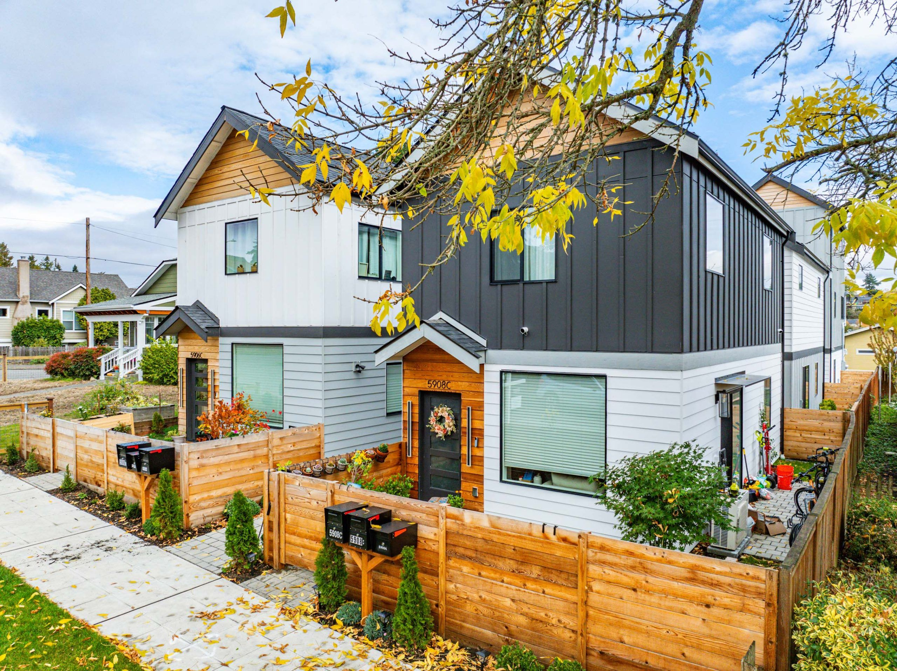
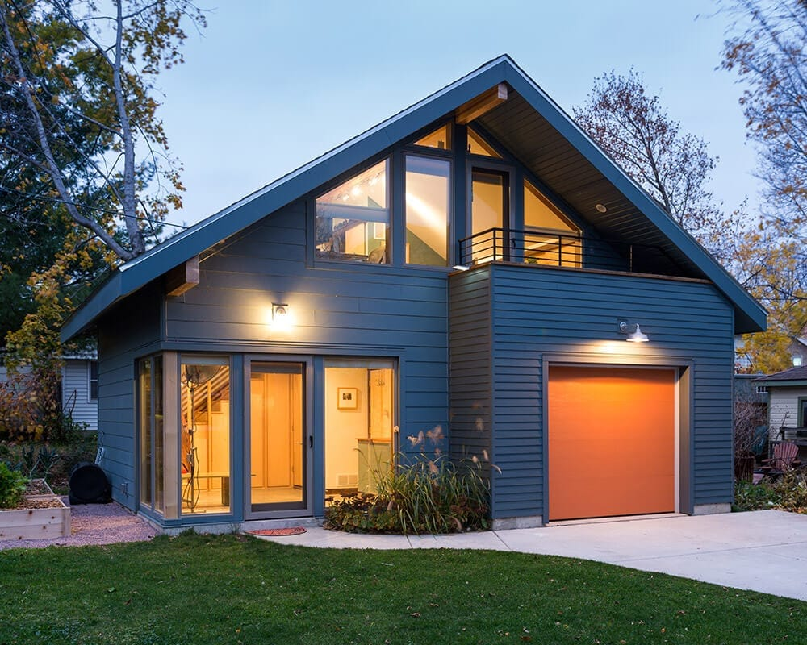
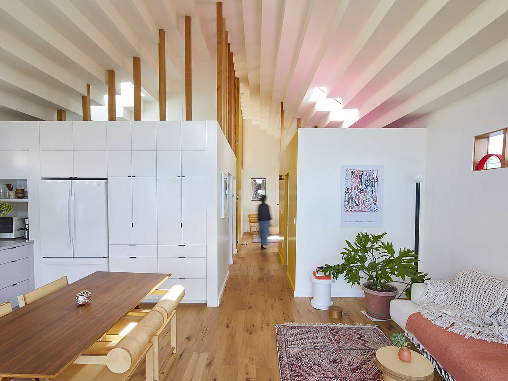
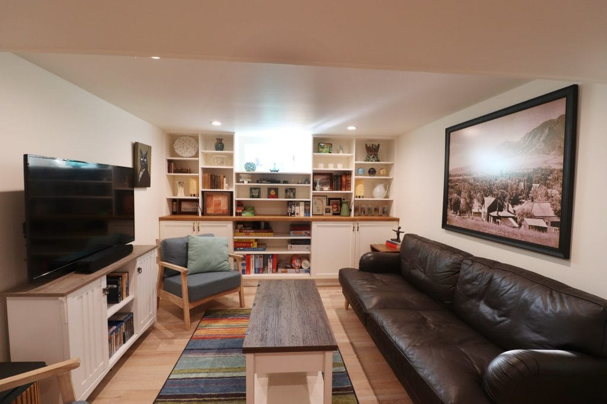
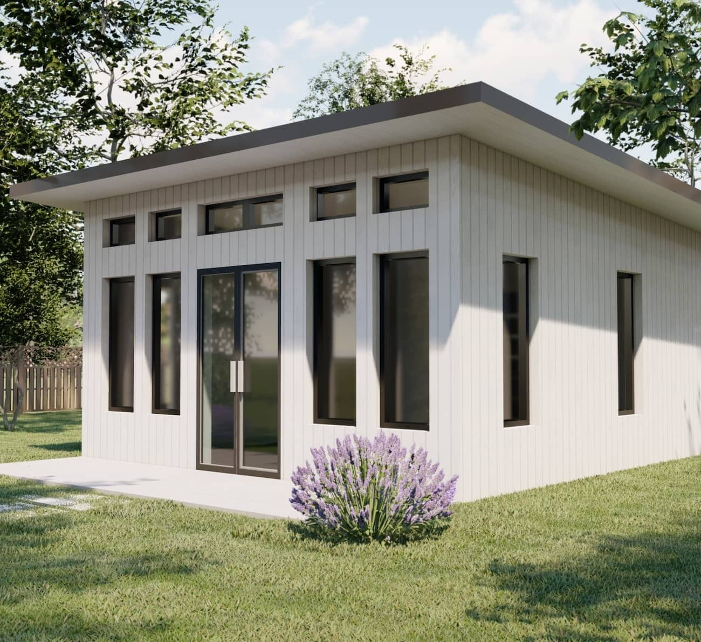
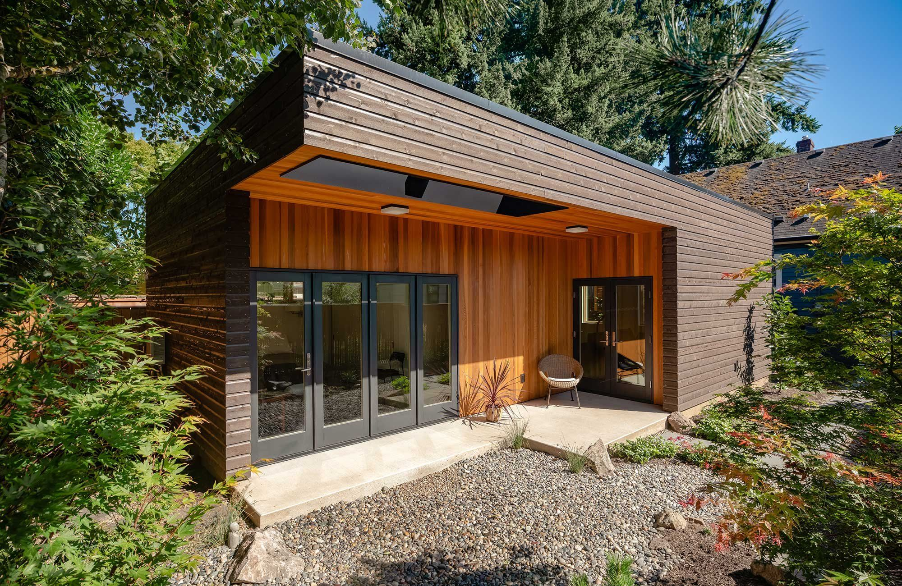

내 부지에 ADU가 가능한지, 비용은 어느 정도인지,
융자까지 가능한지 — 한국어로 편하게 확인하세요.
워싱턴주 ADU 전문 컨설팅, Alabaster.
ADU(Accessory Dwelling Unit)는 기존 주택이 있는 같은 부지 안에 추가로 만드는 독립형 주거 유닛입니다. 별채, 차고 개조, 지하층 전환 등 다양한 방식으로 만들 수 있으며, 독립된 생활 공간으로 사용됩니다.
법규 완화 흐름, 주택 수요 증가, 자산 전략의 변화 속에서 ADU는 워싱턴주 주택 소유자에게 현실적인 옵션이 되고 있습니다.
이미 소유한 부지의 활용 가능성을 높일 수 있습니다. 기존 차고, 지하실, 빈 마당 등 활용되지 않던 공간을 생산적인 거주 공간으로 전환하는 방법을 검토해볼 수 있습니다.
완공 후 임대를 통해 월 임대 수익을 기대해볼 수 있습니다. 워싱턴주 주요 도시의 주거 수요를 고려할 때, ADU는 임대 자산으로서의 가능성을 검토해볼 만한 옵션입니다.
ADU가 포함된 부지는 향후 매각 시 활용 가능성이 더 높은 자산으로 인식될 수 있습니다. 다양한 활용 방식을 통해 장기적 자산 전략을 검토해보실 수 있습니다.
워싱턴주는 주거 부족 문제 해결을 위해 ADU 관련 규정을 완화하는 방향으로 법령을 개정해왔습니다. 이 흐름이 어떤 의미인지, 내 부지에 어떻게 적용되는지 확인해보는 것이 좋습니다.
워싱턴주는 최근 주거 부족 문제를 해결하기 위해 ADU 관련 법령을 지속적으로 완화하는 방향으로 개정해왔습니다. 다만 이는 주(State) 차원의 방향이며, 실제 적용은 거주 지역의 city/county 규정을 함께 확인해야 합니다.
아래 내용은 일반적인 방향성을 안내하는 것으로, 모든 부지에 자동 적용되지 않습니다. 조닝, UGA 여부, sewer/septic 연결, Critical Area 등 부지별 조건을 반드시 사전에 검토하시기 바랍니다.
부지 조건과 목적에 따라 다양한 유형의 ADU를 검토할 수 있습니다. 어떤 유형이 내 상황에 적합한지 함께 확인해보세요.

Detached
Attached
Garage Conversion
Basement
Above Garage
AdditionADU는 단순한 증축이 아니라 주거 전략이자 자산 활용 방법입니다. 내 상황에 맞는 활용 시나리오를 찾아보세요.
장기 임대 또는 단기 임대를 통해 추가 임대 소득을 기대해볼 수 있습니다. 모기지 부담 완화, 생활비 보완 등 다양한 재무적 효과를 검토해보세요.
부모님, 성인 자녀, 친인척이 같은 부지 안에서 가까이 살면서도 각자의 독립적인 공간을 유지할 수 있는 멀티제너레이션 주거 방식입니다.
같은 부지 안에서 완전히 독립된 별채를 통해 세대 간 프라이버시를 확보하면서도 가족 가까이 거주할 수 있는 형태입니다.
지금 당장 사용하지 않더라도 향후 필요에 따라 임대, 가족 거주, 재택근무 공간 등으로 유연하게 활용할 수 있는 장기적 선택입니다.
ADU가 있는 부지는 매각 시 다양한 활용 가능성으로 시장에서 주목받을 수 있습니다. 장기적 자산 포트폴리오 관점에서 검토해보세요.
복잡해 보이는 ADU 프로젝트, 단계별로 정리하면 훨씬 명확해집니다. Alabaster가 각 단계에서 함께합니다.
부지 주소와 기본 정보를 바탕으로 ADU 건축이 가능한 조건인지 확인합니다. 조닝, UGA(도시성장경계), lot size, sewer/septic 여부 등 핵심 항목을 검토합니다.
예상 공사비 범위를 파악하고, 융자 가능 여부 및 금융 구조를 함께 검토합니다. ADU 전용 융자 상품, 리파이낸싱 가능성 등 다양한 옵션을 안내해드립니다.
검증된 건축사 파트너와 연계하여 ADU 설계를 진행하고, 허가 신청에 필요한 도면 및 서류를 준비합니다.
관할 구청에 허가를 접수하고, 심사 과정에서 발생하는 보완 요청 및 수정 사항에 신속하게 대응합니다. 허가 취득까지 전 과정을 지원합니다.
검증된 시공 파트너와 연계하여 공사를 진행합니다. 공정별 진행 상황을 지속적으로 모니터링하며 품질과 일정을 관리합니다.
ADU 완공 이후 임대 운영, 가족 입주, 향후 매각 등 활용 계획을 함께 정리합니다. 완공이 끝이 아니라 시작이 되도록 도와드립니다.
상담 전에 아래 정보를 미리 파악해두시면 더 빠르고 정확한 사전 검토가 가능합니다. 모든 항목을 다 알지 못해도 괜찮습니다. 함께 확인해드립니다.
부지 검토부터 예산 설계, 금융 구조, 허가, 시공 관리까지 ADU 프로젝트의 전 과정을 원스탑으로 안내해드립니다.
조닝, UGA, lot size, sewer/septic 연결 여부, Critical Area 등 ADU 건축 가능성을 판단하는 핵심 조건들을 체계적으로 검토합니다.
ADU 유형별 예상 공사비 범위를 파악하고, 임대 수익 가능성 및 전반적인 사업성을 함께 검토하여 현실적인 계획 수립을 돕습니다.
ADU 전용 융자, 리파이낸싱, HELoan/HELOC 등 다양한 금융 옵션을 안내해드립니다. 융자 가능 여부 및 조건을 함께 확인해보세요.
설계부터 허가 접수, 보완 대응까지 복잡한 인허가 과정을 단계별로 안내하고 파트너 건축사와 연계하여 지원합니다.
건축사, 시공사, 금융 파트너 등 ADU 프로젝트에 필요한 전문 파트너 네트워크를 통해 신뢰할 수 있는 팀을 연결해드립니다.
ADU를 처음 접하는 분들이 가장 많이 물어보는 질문들을 모았습니다.
ADU 건축 가능 여부는 부지의 조닝, UGA(도시성장경계) 포함 여부, lot size, sewer/septic 연결 조건, Critical Area 여부 등 다양한 요소에 따라 달라집니다. 워싱턴주 전체에 일괄 적용되는 기준이 아니라 지역별, 부지별로 확인이 필요합니다. 무료 사전 검토를 통해 빠르게 가능 여부를 확인해보세요.
워싱턴주 법령은 복수의 ADU를 허용하는 방향으로 개정되어 왔으나, 실제 허용 개수는 해당 city/county의 조닝 코드에 따라 달라집니다. 일부 지역은 1개, 일부는 2개 이상을 허용하는 경우도 있습니다. 거주 지역의 규정을 확인하는 것이 선행되어야 합니다.
Owner-Occupancy(집주인 거주 의무) 규정은 지역에 따라 다르며, 워싱턴주 내 많은 지역에서 이 의무가 완화되는 추세입니다. 그러나 일부 지역에서는 여전히 적용될 수 있으므로, 해당 city/county 규정을 반드시 확인하셔야 합니다.
가능한 경우가 많습니다. 기존 차고를 거주 공간으로 전환하는 Garage Conversion ADU는 비교적 비용 효율적인 방법 중 하나로 많이 검토됩니다. 다만 구조 검토, 단열·전기·배관 업그레이드, 허가 조건 충족 여부 등을 사전에 확인해야 합니다. 부지별 조건에 따라 가능 여부가 달라집니다.
워싱턴주의 많은 지역에서 ADU 추가에 따른 의무 주차 공간 확보 규정이 완화되고 있습니다. 특히 대중교통 접근이 좋은 지역에서는 주차 규정이 더 유연하게 적용될 수 있습니다. 그러나 지역마다 다르므로 반드시 확인이 필요합니다.
ADU 공사 비용은 유형, 규모, 위치, 설계 복잡도, 인프라 조건 등에 따라 큰 폭의 차이가 있습니다. 일반적으로 차고 전환형은 신축형보다 비용이 낮은 편이며, 신축 독립 별채의 경우 더 높은 비용이 드는 경향이 있습니다. 정확한 예산 범위는 부지 조건과 유형을 확인한 후 안내해드릴 수 있습니다.
네, 다양한 융자 옵션이 있습니다. ADU 전용 융자 프로그램, 기존 주택을 활용한 HELOC/HELoan, Cash-out Refinancing 등 상황에 따라 적합한 금융 구조가 다릅니다. 융자 가능 여부와 조건은 신청인의 자격, 금융기관 심사 기준, 주택 가치 등에 따라 달라지므로 개별 상담을 통해 확인하시기 바랍니다.
더 궁금한 점이 있으신가요?
상담 요청하기면책 고지: 본 웹사이트의 모든 정보는 일반적인 안내 목적으로 제공되며, 법률·금융 자문을 구성하지 않습니다. ADU 허가 가능 여부는 부지 조건, 관할 지역 규정, 인프라 조건 등에 따라 달라질 수 있으며, 동일한 결과를 보장하지 않습니다. 금융 조건은 신청인의 자격 요건 및 금융기관 심사 기준에 따라 달라질 수 있습니다. 최종 의사결정 전에 관련 전문가와 개별 상담을 받으시기 바랍니다.